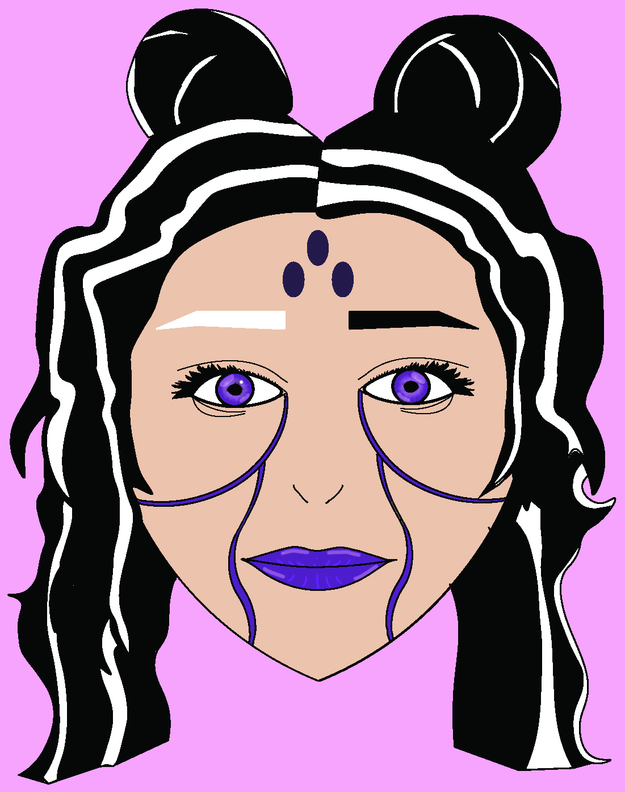

Vector Images and Rastor All Multimedia Projects.
Vector Image:
 vector imageThe character I drew is Genova, the main character in my story. I chose the colors that represent her and are actually her which is black, purple, and white. My inspiration came from a mix of different anime shows. A change I made for my character while drawing her eyes was that I gave her a hint of light purple by her puples. . The most challenging part creating my character was her eyes. But I was able to get a couple ideas from other sources and learned how I wanted them to look.